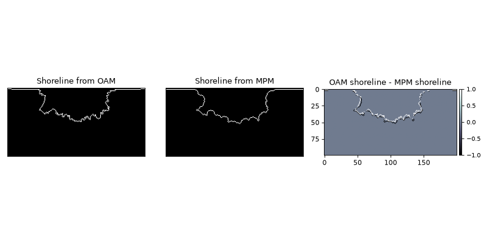

Creating Sections into different types of objects¶
You can create masks from planforms, combining planforms in multiple ways to reuse already completed computations. This is mostly relevant if using the OpeningAngleMethod to derive masks, because this method is fairly computationally expensive.
golfcube = spl.sample_data.golf()
OAP = spl.plan.OpeningAnglePlanform.from_elevation_data(
golfcube['eta'][-1, :, :], elevation_threshold=0)
MP = spl.plan.MorphologicalPlanform.from_elevation_data(
golfcube['eta'][-1, :, :], elevation_threshold=0, max_disk=8)
SM_from_OAM = spl.mask.ShorelineMask.from_Planform(
OAP, contour_threshold=75)
SM_from_MPM = spl.mask.ShorelineMask.from_Planform(
MP, contour_threshold=0.75)
fig, ax = plt.subplots(1, 3, figsize=(10, 5))
SM_from_OAM.show(ax=ax[0])
ax[0].set_title('Shoreline from OAM')
SM_from_MPM.show(ax=ax[1])
ax[1].set_title('Shoreline from MPM')
diff_im = ax[2].imshow(
SM_from_OAM.mask.astype(float) - SM_from_MPM.mask.astype(float),
interpolation=None, cmap='bone')
ax[2].set_title('OAM shoreline - MPM shoreline')
spl.plot.append_colorbar(diff_im, ax=ax[2])
plt.tight_layout()
plt.show()
(Source code, png, hires.png)
{kind=link}
{kind=link}
